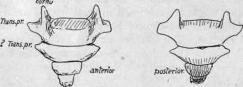

Coccyx
Description
This section is from the book "The Anatomy Of The Human Skeleton", by J. Ernest Frazer. Also available from Amazon: The anatomy of the human skeleton.
Coccyx
This small bone is composed of the fused remains of four or more vertebral bodies, of which the first alone, as a rule, carries rudiments of transverse processes and upper articular processes : the latter are termed cornua, and are attached by ligaments to the sacral cornua. The upper surface of the first coccygeal body articulates with the lower end of the sacrum with intervening fibro-cartilage. The number of segments in the bone is variable, and may said to be four or less in women and four or more in men, speaking generally : ventral processes have been described as occasionally present, representing either costal elements or the remains of haemal arches.
The first segment is often separate, the others more rarely : fusion is said to take place later in women, no doubt in accordance with the functional requirements of the pelvic outlet.
The last segment represents the fusion of three or more rudiments that are present in the embryo : it is the extent of this fusion that determines the number of segments present in the adult bone : the fourth segment is frequently larger than the third.
The bone is directed forwards and downwards from the sacrum, so that its ventral surface looks upwards and forwards. The muscular floor of the pelvis reaches its margin, and ligamentous fibres from this and the lesser sciatic ligament run on to its front surface and cover it, with the fibres of the anterior ligament : these separate it from the coccygeal ganghon and the rectum (Fig. 35). The great sciatic hgament and Gluteus maximus reach the margins behind the structures already mentioned, and fibres from these spread over the dorsal surface of the bone, covering in the filum terminale, which runs to the back of the bone from the lower sacral opening, and the coccygeal nerve, which turns out behind the first segment. The " ano-coccygeal hgament " and external sphincter are attached to the end of the bone.
Fig. 35.-Coccyx.
Thus the coccyx could be described as embedded in fibrous tissue and affected by the contractions of the muscular pelvic floor and the Gluteus maximus: the fibrous tissue on its dorsum contains filaments of the posterior primary divisions of the coccygeal and last sacral nerves.
The rudiments of at least six coccygeal vertebras are to be found in embryonic life. The distal ones fuse, and there are usually four at birth, still cartilaginous. Ossification begins usually in the first year in the first segment, but this is very variable in individuals. The ossification of the succeeding segments goes on with wide limits until puberty, or even after this. Centres are also described for the cornua and for epiphysial plates in each segment : also a fifth segmental ossification has been described, fusing later with the fourth. Possibly some, at any rate, of these can be looked on as individual variations, Ossification appears to be later in women than in men.
Continue to: